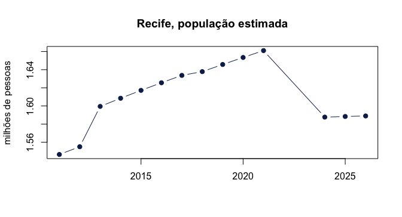

O Observatório de Pernambuco é a base de dados estatísticos da Condepe/Fidem, a Agência Estadual de Planejamento e Pesquisas de Pernambuco. Ele reúne séries do IBGE, dos ministérios da Saúde, da Educação, do Trabalho e da Fazenda, da Justiça Eleitoral, de órgãos estaduais e de outras fontes, para os 185 municípios de Pernambuco e para o Estado. A consulta pelo navegador fica em https://cf.pe.gov.br/observatorio; os arquivos completos, em https://cf.pe.gov.br/observatorio/dados/atual/.
Todas as fontes são publicadas no mesmo formato longo — uma observação por linha, 15 colunas —, e por isso meia dúzia de funções dá conta de todas:
| Função | Para quê |
|---|---|
condepe_catalog() |
o que existe: as fontes, com tema, período e tamanho |
condepe_indicators() |
os indicadores de uma fonte |
condepe_series() |
a série de um indicador, filtrada por município e ano |
condepe_data() |
uma fonte inteira |
condepe_localities() |
os municípios e seus códigos IBGE |
O que existe
condepe_catalog() devolve uma linha por fonte. A relação
completa, agrupada por eixo e tema, está na vignette
vignette("fontes", package = "condepe").
cat <- condepe_catalog()
cat[, c("id_fonte", "tema", "indicadores", "ano_inicio", "ano_fim")]
#> # A tibble: 75 × 5
#> id_fonte tema indicadores ano_inicio ano_fim
#> <chr> <chr> <int> <int> <int>
#> 1 sidra_populacao_estimada Demografia 1 2001 2026
#> 2 sidra_pib_municipal PIB 7 2002 2023
#> 3 sidra_censo_2022 Demografia 3 2022 2022
#> 4 sidra_area_densidade Posição e Extensão 2 2010 2010
#> 5 sidra_pam Agropecuária 243 2020 2025
#> 6 sidra_ppm_rebanho Agropecuária 10 2020 2025
#> # ℹ 69 more rowsO catálogo é versionado: cada publicação do Observatório tem uma versão, e a citação a usar acompanha o resultado.
attr(cat, "version")
#> [1] "2026-11-05_171049"
attr(cat, "citation")
#> [1] "Condepe/Fidem, Observatório de Pernambuco — Base de Dados do Estado, version 2026-11-05_171049, https://cf.pe.gov.br/observatorio (CC BY 4.0)."Quantas fontes há em cada eixo, e quantos indicadores:
aggregate(cbind(fontes = 1, indicadores) ~ eixo, data = cat, FUN = sum)
#> eixo fontes indicadores
#> 1 Economia 26 89374
#> 2 Infraestrutura 2 29
#> 3 Social 44 15060
#> 4 Território 3 9034Para achar uma fonte por assunto, filtre o catálogo como qualquer tabela:
cat[cat$tema == "Saúde", c("id_fonte", "descricao")]
#> # A tibble: 9 × 2
#> id_fonte
#> <chr>
#> 1 datasus_sim
#> 2 datasus_sinasc
#> 3 datasus_mortalidade_infantil
#> 4 datasus_estabelecimentos
#> 5 datasus_profissionais
#> 6 datasus_leitos
#> 7 datasus_equipamentos
#> 8 datasus_equipes
#> 9 datasus_internacoes
#> descricao
#> <chr>
#> 1 Óbitos por residência (total, infantis, por causa e sexo) e por ocorrência
#> 2 Nascidos vivos por residência (sexo, parto, peso, idade da mãe, pré-natal, pr…
#> 3 Taxa de mortalidade infantil (óbitos de menores de 1 ano por mil nascidos viv…
#> 4 Estabelecimentos de saúde por tipo de unidade
#> 5 Vínculos de profissionais de saúde por ocupação (CBO); um profissional em doi…
#> 6 Leitos existentes, SUS e contratados por tipo; leitos de UTI por grupo (adult…
#> 7 Equipamentos de saúde em uso: total e grupos (tomógrafo, ressonância, mamógra…
#> 8 Equipes de saúde ativas em dezembro, total e por tipo (CNES-EP)
#> 9 Internações hospitalares do SUS: mensais por especialidade (local de internaç…
cat[grepl("escola|ensino|IDEB", cat$descricao, ignore.case = TRUE), c("id_fonte", "descricao")]
#> # A tibble: 10 × 2
#> id_fonte
#> <chr>
#> 1 mte_rais
#> 2 mte_rais_historica
#> 3 inep_complexidade_de_gestao_da_escola
#> 4 inep_taxas_de_rendimento_escolar
#> 5 inep_remuneracao_media_dos_docentes
#> 6 inep_ideb_anos_iniciais
#> 7 inep_ideb_anos_finais
#> 8 inep_ideb_ensino_medio
#> 9 inep_censo_escolar
#> 10 tse_perfil_eleitorado
#> descricao
#> <chr>
#> 1 Vínculos formais ativos em 31/12 por município: total, sexo, escolaridade, f…
#> 2 RAIS histórica 1985–2017 por município: vínculos, admissões, desligamentos e…
#> 3 Indicador de complexidade de gestão da escola
#> 4 Taxas de rendimento escolar (aprovação, reprovação e abandono)
#> 5 Remuneração média dos docentes da educação básica (RAIS × Censo Escolar)
#> 6 IDEB por município - anos iniciais do ensino fundamental
#> 7 IDEB por município - anos finais do ensino fundamental
#> 8 IDEB por município - ensino médio
#> 9 Censo Escolar: matrículas, docentes, turmas, salas, equipamentos e profissio…
#> 10 Perfil do eleitorado por município: gênero, faixa etária, escolaridade, esta…Os indicadores de uma fonte
condepe_indicators("datasus_mortalidade_infantil")
#> # A tibble: 1 × 8
#> indicador_base unidade
#> <chr> <chr>
#> 1 Taxa de mortalidade infantil (por mil nascidos vivos) Por mil nascidos vivos
#> natureza mensal observacoes localidades ano_inicio ano_fim
#> <chr> <lgl> <int> <int> <int> <int>
#> 1 estoque FALSE 1480 185 2017 2024Fontes grandes têm centenas de indicadores; procure pelo nome:
ind <- condepe_indicators("datasus_sinasc")
ind$indicador_base
#> [1] "Nascidos vivos por ocorrência - Total"
#> [2] "Nascidos vivos por residência - Baixo peso (< 2.500g)"
#> [3] "Nascidos vivos por residência - Homens"
#> [4] "Nascidos vivos por residência - Mães adolescentes (< 20 anos)"
#> [5] "Nascidos vivos por residência - Mulheres"
#> [6] "Nascidos vivos por residência - Parto cesáreo"
#> [7] "Nascidos vivos por residência - Parto vaginal"
#> [8] "Nascidos vivos por residência - Pré-natal com 7 ou mais consultas"
#> [9] "Nascidos vivos por residência - Prematuros (< 37 semanas)"
#> [10] "Nascidos vivos por residência - Total"A coluna natureza diz como somar no tempo:
estoque é uma foto (população, leitos em dezembro) e não se
soma entre anos; fluxo é o que aconteceu no período
(nascimentos, internações) e se soma.
Uma série
condepe_series() filtra uma fonte por indicador e, se
pedido, por código IBGE — 7 dígitos para município, "26"
para o Estado — e por ano. A população do Recife (2611606):
recife <- condepe_series(
"sidra_populacao_estimada", "Populacao residente estimada",
code = "2611606", years = 2010:2026
)
recife[, c("nm_municipio", "ano", "valor", "unidade")]
#> # A tibble: 14 × 4
#> nm_municipio ano valor unidade
#> <chr> <int> <dbl> <chr>
#> 1 Recife 2011 1546516 Pessoas
#> 2 Recife 2012 1555039 Pessoas
#> 3 Recife 2013 1599513 Pessoas
#> 4 Recife 2014 1608488 Pessoas
#> 5 Recife 2015 1617183 Pessoas
#> 6 Recife 2016 1625583 Pessoas
#> 7 Recife 2017 1633697 Pessoas
#> 8 Recife 2018 1637834 Pessoas
#> 9 Recife 2019 1645727 Pessoas
#> 10 Recife 2020 1653461 Pessoas
#> 11 Recife 2021 1661017 Pessoas
#> 12 Recife 2024 1587707 Pessoas
#> 13 Recife 2025 1588376 Pessoas
#> 14 Recife 2026 1588983 Pessoas
plot(
recife$ano, recife$valor / 1e6, type = "b", pch = 19, col = "#0c2856",
xlab = "", ylab = "milhões de pessoas", main = "Recife, população estimada"
)
plot of chunk populacao-recife
O IBGE não estimou a população municipal em 2022 e 2023 (ano do Censo e o seguinte); esses anos simplesmente não aparecem — ausência nunca vira zero.
Os códigos IBGE ficam em condepe_localities():
loc <- condepe_localities()
loc[grepl("Petrolina|Caruaru|Garanhuns", loc$nm_municipio), ]
#> # A tibble: 3 × 2
#> cd_municipio_ibge nm_municipio
#> <chr> <chr>
#> 1 2604106 Caruaru
#> 2 2606002 Garanhuns
#> 3 2611101 PetrolinaSéries mensais
Fontes mensais trazem o período duas vezes: em mes e no
rótulo completo, indicador ("... [MM/AAAA]").
Filtre por indicador_base, o rótulo sem o período:
suape <- condepe_series(
"porto_suape_carga", "Porto de Suape - Carga bruta total",
years = 2026
)
suape[, c("ano", "mes", "indicador", "valor", "unidade")]
#> # A tibble: 9 × 5
#> ano mes indicador valor unidade
#> <int> <int> <chr> <dbl> <chr>
#> 1 2026 1 Porto de Suape - Carga bruta total [01/2026] 2193515. t
#> 2 2026 2 Porto de Suape - Carga bruta total [02/2026] 2084475. t
#> 3 2026 3 Porto de Suape - Carga bruta total [03/2026] 2223492. t
#> 4 2026 4 Porto de Suape - Carga bruta total [04/2026] 2360768. t
#> 5 2026 5 Porto de Suape - Carga bruta total [05/2026] 2403538. t
#> 6 2026 6 Porto de Suape - Carga bruta total [06/2026] 2445490. t
#> 7 2026 7 Porto de Suape - Carga bruta total [07/2026] 2363978. t
#> 8 2026 8 Porto de Suape - Carga bruta total [08/2026] 2726020. t
#> 9 2026 9 Porto de Suape - Carga bruta total [09/2026] 2453353. tUma fonte inteira e as colunas
condepe_data() devolve a fonte completa. As 15 colunas
mantêm os nomes com que o Observatório publica, para que todo resultado
possa ser rastreado até os arquivos oficiais:
nasc <- condepe_data("datasus_sinasc")
names(nasc)
#> [1] "cd_municipio_ibge" "nm_municipio" "ano"
#> [4] "mes" "indicador" "indicador_base"
#> [7] "valor" "unidade" "natureza"
#> [10] "id_fonte" "eixo" "tema"
#> [13] "assunto" "fonte_original" "arquivo_origem"| Coluna | Significado |
|---|---|
cd_municipio_ibge, nm_municipio
|
código IBGE (7 dígitos; "26" é o Estado) e nome |
ano, mes
|
ano; mês nas séries mensais (NA nas demais) |
indicador, indicador_base
|
rótulo completo (com [MM/AAAA] se mensal) e rótulo sem
o período |
valor, unidade, natureza
|
valor, unidade, estoque ou fluxo
|
id_fonte, eixo, tema,
assunto
|
a fonte e seu lugar no catálogo |
fonte_original, arquivo_origem
|
órgão de origem e o arquivo ou a consulta de onde o valor veio |
Para passar ao formato largo (um indicador por coluna), use
reshape() ou tidyr::pivot_wider():
largo <- reshape(
as.data.frame(nasc[nasc$ano == 2024 & grepl("^Nascidos vivos por residência - (Total|Parto)", nasc$indicador_base),
c("nm_municipio", "indicador_base", "valor")]),
idvar = "nm_municipio", timevar = "indicador_base", direction = "wide"
)
head(largo)
#> nm_municipio valor.Nascidos vivos por residência - Parto cesáreo
#> 1 Abreu e Lima 499
#> 4 Afogados da Ingazeira 348
#> 7 Afrânio 143
#> 10 Agrestina 221
#> 13 Água Preta 138
#> 16 Águas Belas 282
#> valor.Nascidos vivos por residência - Parto vaginal
#> 1 536
#> 4 164
#> 7 86
#> 10 113
#> 13 176
#> 16 353
#> valor.Nascidos vivos por residência - Total
#> 1 1037
#> 4 512
#> 7 229
#> 10 334
#> 13 314
#> 16 635Cache, espelho e falhas
Os arquivos são baixados uma vez por versão do catálogo e guardados
em condepe_cache_dir(), conferidos pelo SHA-256 publicado
no catálogo; quando sai uma versão nova, os arquivos antigos são
apagados. O próprio catálogo vale por seis horas
(refresh = TRUE consulta de novo).
Os dados vêm do endereço canônico, https://cf.pe.gov.br/observatorio/dados/atual/. Se ele
não responder, o pacote lê os mesmos arquivos do espelho no Hugging
Face, mlkwy/observatorio-pernambuco.
Se nenhum responder, as funções avisam e devolvem tibbles vazios com as
colunas documentadas: o script degrada em vez de quebrar.
Citação e licença
Os dados são publicados sob CC BY
4.0: cite a Condepe/Fidem e a versão
(attr(condepe_catalog(), "citation")).